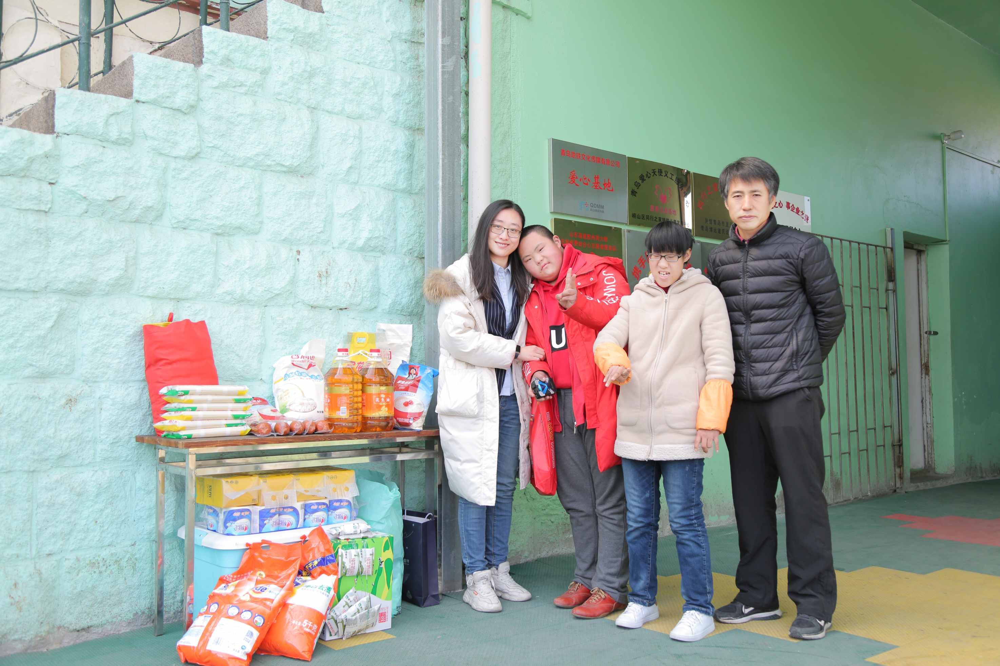
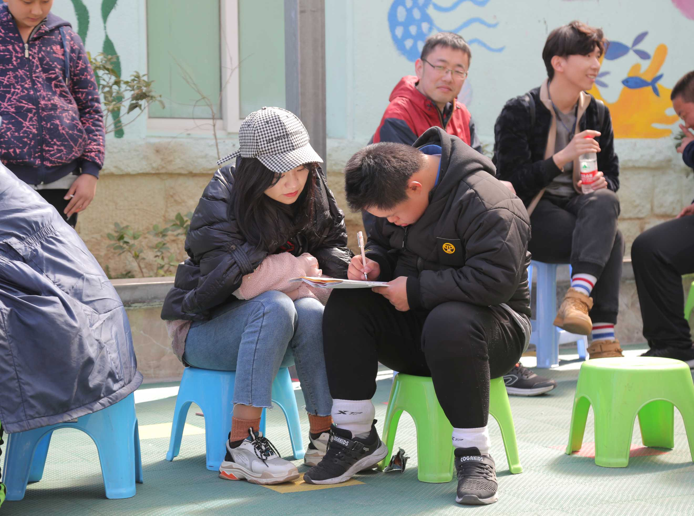
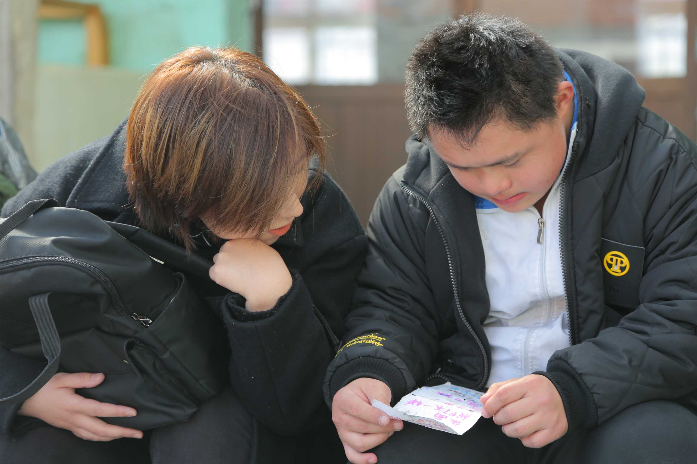
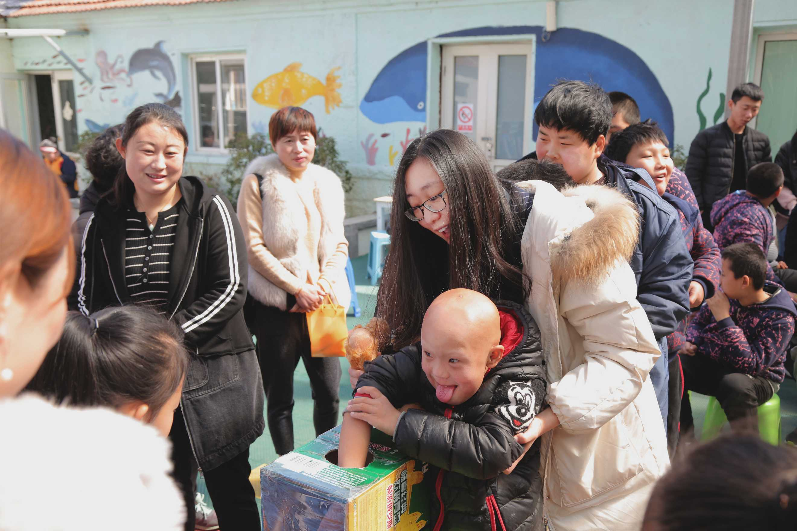

- 返回顶部
- 4006-299-520
- 在线咨询
- 微信公众号

继青岛福利院献爱心活动之后，橘子情感于2019年3月16日，再次开启公益帮扶活动，探
访位于青岛市“同行之家”的特殊儿童们。

“同行之家”位于青岛市崂山区，是一家综合性的爱心学校，目前共收纳30余名“特殊儿
童”，他们多为孤儿、自闭症、唐氏综合征、智力障碍以及盲人儿童。这些孩子性格单纯，天
真可爱，与普通孩子同龄，但由于不幸的遭遇，他们无法像普通孩子那样生活。比起物质上的
满足，他们更需要精神上的关怀。
橘子情感虽然专注于两性情感服务，但“为爱而生”的行业理念，让我们每一位员工身上
都背负着强烈的社会责任感。为了让这些特殊的、如星星般的孩子们，感受到来自外界的温暖，
橘子情感特此成立“爱心小组”，率领导师团队的心理咨询师们，与爱同行，为孩子们送去关
怀。

抵达同行之家后，大家不仅为孩子们送去鸡蛋、牛奶、食用油、纸巾等日常生活物资，
还组织了各种娱乐活动。起初，孩子们还有些生怯，但在大家的引导和带领之下，孩子们很
快就打开了心房，向我们展现了热情、可爱、烂漫的一面，甚至主动邀请我们欣赏他们的画
作。

看着孩子们一步步地向我们靠近，感动的同时，也让我们想起了行业的初衷——为爱
而生。 为了帮助孩子们更加健康快乐的成长，橘子情感的心理咨询师们，开展了心理辅导
活动，为孩子们的家长提供心理咨询服务，从心理学的角度，引导家长们用正确的方法跟孩
子交流，关注孩子们的“心理健康”，还给孩子们一个完美的童年。
在咨询的过程中，我们还发现大部分孩子的家长，都存在婚姻问题，比如争吵、冷暴力。
家庭环境，对孩子的影响是非常大的，父母的婚姻模式有问题，会给孩子带去消极负面的家
庭氛围，不利于孩子成长。
为此，我们的情感导师提供了针对性地指导和建议，根据每一个家庭的情况，提出了的
建议，比如利用情绪转移的方式，减少家庭冲突，利用共情沟通的方式，来解决婚姻矛盾。

“同行之家”的创始人许明哲，与我们交谈的过程中，谈起了“同行之家”的各种发展与
变化，许明哲表示“如果没有政府的扶持，和社会各界爱心人士的帮助，同行之家将举步维艰，
非常感谢你们给孩子带来了物质支持，更重要的是你们给孩子的精神鼓励和心理健康的关注，
让我相信孩子们将有一个更加美好的明天......”

快乐的时光总是很短暂，虽心有不舍，但也不得不离开，橘子情感“爱心小组”临走前
孩子们不停地向我们挥手说再见，眼神里透露出来的失落和遗憾，更让我们难以割舍。
通过此次爱心活动，我们也明白了“同行之家”的真正含义，这些特殊儿童更像是折翼
的天使，需要我们用爱去滋养，用实际行动为他们描绘一个美好的未来。
橘子情感一直积极地履行企业社会责任，始终不忘关爱社会弱 势群体，投入大量的人力
物力帮助有需要的人们。
橘子情感在此呼吁社会爱心人士一同关注社会特殊儿童群体，贡献自己的力量帮助这些残
障儿童，你的一个微笑、一个拥抱，都是他们快乐的源泉。未来，橘子情感将继续坚持自己的
初衷，不遗余力地开展和推进爱心公益活动，凝聚热情和力量，将爱传递到每一个角落。
 两性情感咨询师n对1指导了解详情>>
两性情感咨询师n对1指导了解详情>>
{kind=link}